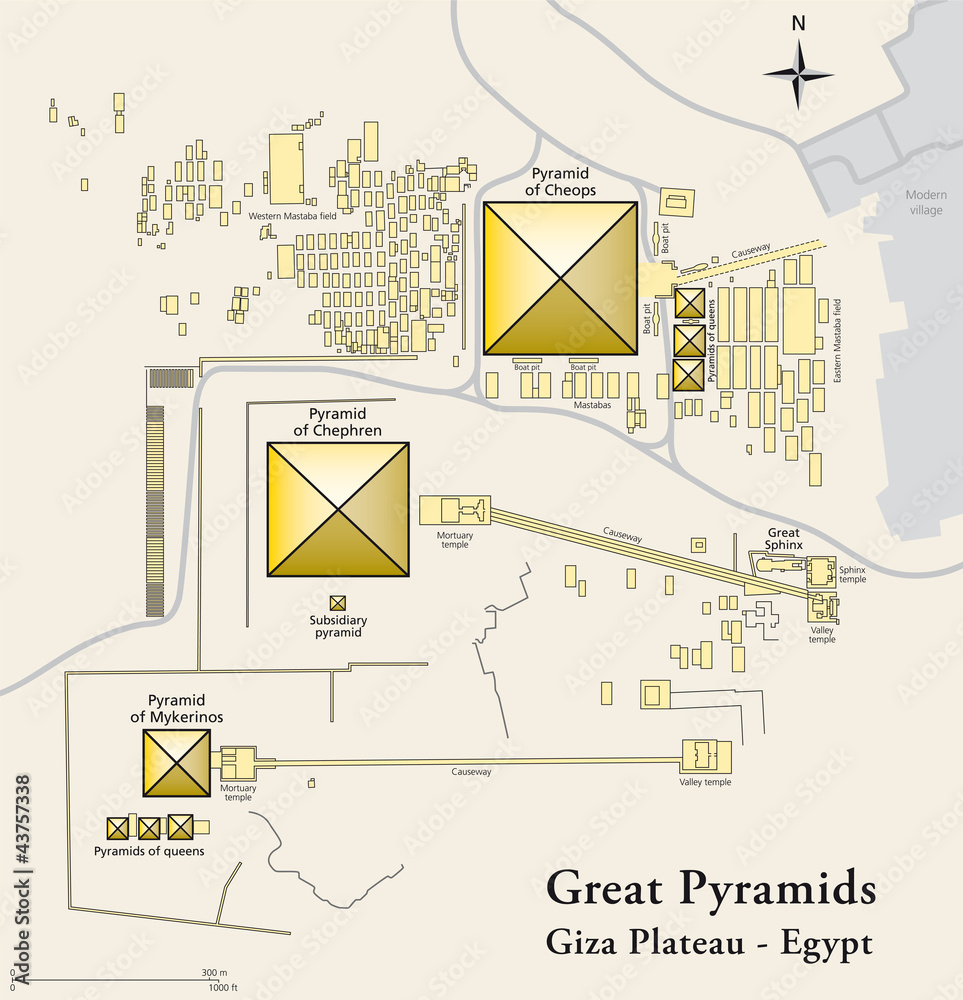

GIZA
Superlative emblems of the quest for immortality, the pyramid tombs at Giza (bellow) went up at the command of the Dynasty IV kings, who worshiped the sun god, Re.Pyramids may have represented eternal shafts of sunlight or symbolized the mythical mound of creation. some scholars now believe that the pyramid form had evolved much earlier, not in royal circles but as part of the religion of the common people.
The Great Pyramid of Khufu (Cheops) was built 755 feet square and 481 feet tall—the world's largest stone edificie. khufu's funerary complex includes a mortuary temple, four small subsidiary pyramids, five pits for his royal boats, and a valley temple, identified in 1990.
Only Khafre's (chephren's) pyramid retains part of the original casing of gleaming white limestone. 
CHRONOLOGY
| EARLY DIYNASTIC Dynasties I-II 3000B.C. |
Consolidations of the state and founding of Memphis. Calendar and hieroglypic writing. Royal necropolis at Abydos; vast emeteries at Saqqra and other sites. |
|---|---|
| OLD KINGDOM Dynasties III-VIII 2600 B.C. FIRST INTERMEDIATE PERIOD Dynasties IX-XI |
Age of pyramids reaches zenith at Giza; cult of the sun god, Re, centered at Heliopolis. Cultural flowering; trade with Mediterranean region and brief occupation of Lower nubia |
| Political chaos as Egypt splits into two regions with separate dynasties. | |
| MIDDLE KINGDOM Dynasties XI-XIV 2400B.C. SECOND INTERMEDIATE PERIOD Dynasties XV-XVII |
Reunification by Theban kings. Dynasty XII kings win control of Lower Nubia; royal burials shift north to near Membphis. Major irrigation projects. Classical literry period. |
| Asiatic Hyksos settlers rule the north, introducing the horse and chariot; Thebans rule the south. | |
| NEW KINGDOM Dynasties XVIII-XX 1550 B.C. THIRD INTERMEDIATE PERIOD Dynasties XXI-XXIV |
Thebans expel the Hyksos and reunite Egypt. In this "age of empire",warrior kings conquer parts of Syria, Palestine, and Lower Nubia. |
| Egypt is divided. the high priests of Amun control Thebes; ethnic Libyans rule elsewhere | |
| LATE PERIOD Dynasties XXV-XXX 715 B.C GRECO-ROMAN PERIOD |
Nubians from Kush conquer Egypt; Egypt reunited under Saite dynasty. Persia rules in fifth century B.C. Egypt independent from 404 to 343 B.C. |
| Ptolemies rule after the death of Alexander the Great. Dramatic growth of population and agricultural output. Roman emperors build many temples, depicting themselves in the Egyptian style. |